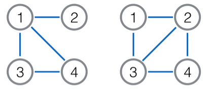

九条可怜是一个热爱出题的女孩子。
今天可怜想要出一道和图论相关的题。在一张无向图 $G$ 上，我们可以对它进行一些非常有趣的变换，比如说对偶，又或者说取补。这样的操作往往可以赋予一些传统的问题新的活力。例如求补图的连通性、补图的最短路等等，都是非常有趣的问题。
最近可怜知道了一种新的变换：求原图的线图 (line graph)。对于无向图 $G = ⟨V, E⟩$，它的线图 $L(G)$ 也是一个无向图:
- 它的点集大小为 $|E|$，每个点唯一对应着原图的一条边。
- 两个点之间有边当且仅当这两个点对应的边在原图上有公共点（注意不会有自环）。
下图是一个简单的例子，左图是原图，右图是它对应的线图。其中点 $1$ 对应原图的边 $(1, 2)$，点 $2$ 对应 $(1, 4)$，点 $3$ 对应 $(1, 3)$，点 $4$ 对应 $(3, 4)$。

经过一些初步的摸索，可怜发现线图的性质要比补图复杂很多，其中突出的一点就是补图的补图会变回原图，而 $L(L(G))$ 在绝大部分情况下不等于 $G$，甚至在大多数情况下它的点数和边数会以很快的速度增长。
因此，可怜想要从最简单的入手，即计算 $L^k(G)$ 的点数（$L^k(G)$ 表示对 $G$ 求 $k$ 次线图）。然而遗憾的是，即使是这个问题，对可怜来说还是太困难了，因此她进行了一定的弱化。她给出了一棵 $n$ 个节点的树 $T$，现在她想让你计算一下 $L^k (T)$ 的点数。
 Comet OJ
Comet OJ